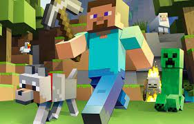
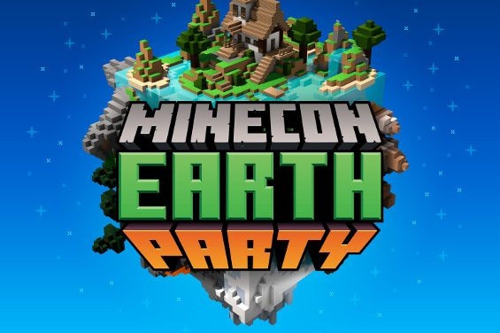

Minecraft


Les origines de Minecraft
Minecraft est un jeu vidéo de type «bac à sable» (construction complètement libre) développé en Java par Markus Persson, alias Notch, puis par la société Mojang Studios. Il s'agit d'un univers composé de voxels, qui intègre un système d'artisanat axé sur l'exploitation puis la transformation de ressources naturelles.
La Minecon, un congrès en l'honneur de Minecraft, célèbre la sortie officielle du jeu le 18 novembre 2011. Disponible en 139 langues, le jeu vidéo se vend en neuf ans à plus de 200 millions d'exemplaires sur toutes les plateformes, et est également décliné sous plusieurs formes physiques : papercraft (origami), produits dérivés et boîtes de jeu Lego. 
Minecraft est à l'origine développé pour être un jeu sur navigateur Web, puis sur Windows, Mac et Linux (à l'aide de Java). Un portage sur téléphone mobile existe également, Minecraft Bedrock Édition, sortie sur les smartphones Android, sur les terminaux iOS, les appareils Windows Phone et est disponible sur les ordinateurs Windows 10.
En mai 2020, Minecraft a passé la barre des 200 millions d'exemplaires vendus sur toutes les plateformes, ce qui en fait à la fois le jeu vidéo le plus vendu de tous les temps et la sixième franchise la plus vendue de tous les temps, avec une communauté de 126 millions de joueurs actifs par mois en mai 2020.
Le système du jeu
Le jeu plonge le joueur dans un monde créé dynamiquement, composé de blocs cubiques représentant différents matériaux comme (terre, sable, pierre, eau, lave ou encore minerais comme du fer, de l'or, du charbon, etc.) formant diverses structures (arbres, cavernes, montagnes, temples) et des animaux ou monstres tels que des vaches, des moutons, des zombies et des squelettes. Le joueur peut modifier ce monde à volonté en y ajoutant ou supprimant des blocs et en tentant de survivre le plus longtemps possible lui permettant ainsi de bâtir des constructions avec une grande liberté, rappelant ainsi les jeux de création Lego10.
Le joueur est représenté par un personnage, de forme humaine, sans sexe prédéfini, du nom du pseudo demandé lors du premier démarrage du jeu. Son apparence peut être personnalisée, mais il a par défaut une apparence nommée Steve, possédant un jean bleu et une veste turquoise, ou une nommée Alex, d'un jean marron, une veste verte, et aux cheveux roux longs. La vue par défaut du joueur est à la première personne, qu'il peut faire passer en deuxième personne et troisième personne dans les options. Il possède une jauge de vie ainsi qu'une jauge de nourriture. Si sa barre de vie atteint 0 , le joueur ressuscite à son emplacement de départ sur la carte où à côté du dernier lit dans lequel il a dormi (ou à côté de son ancre de réapparition dans le monde du Nether, où dormir dans un lit peut tuer le joueur par une explosion).
Le joueur, par défaut droitier, peut utiliser ses deux mains, mais seule la main de préférence peut effectuer des actions telles que : combattre, casser ou poser des blocs. Il possède un inventaire de 27 cases, chacune pouvant contenir jusqu'à 64 objets d'un même type ( qu'on appelle un stack), ainsi qu'une barre d'accès rapide de 9 cases (l'inventaire rapide), et une case pour la seconde main. Dans son inventaire, il peut aussi fabriquer des petits objets grâce à une grille de fabrication de 2 cases sur deux ou équiper une armure.
Bien que le jeu ne se termine jamais à proprement parler, il possède une fin : il s'agit d'un long dialogue entre deux personnages qui s'affiche quand le joueur a tué l'Ender Dragon, un boss vivant dans la dimension de l'End et qui est réservé aux joueurs chevronnés de par sa difficulté et du fait que l'End n'est accessible qu'après de nombreux prérequis. Après cette scène, le joueur réapparait à la surface et peut continuer à jouer. Il est également possible de « terminer » Minecraft en collectant tous les trophées ou en rassemblant un exemplaire de chaque matière ou chaque objet du jeu, par exemple, selon l'imagination et la patience du joueur.